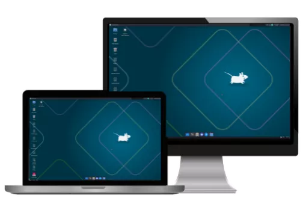

Estamos desarrollando una nueva versión de miOS GNU/Linux
La nueva etapa del proyecto busca reiniciar el concepto del sistema para hacerlo más personalizable, más eficiente, más bonito visualmente y mejor optimizado, manteniendo siempre la esencia original de la distribución.
Mientras se trabaja en esa nueva dirección, el objetivo es preparar una base más clara, más estable y mejor adaptada a equipos actuales y antiguos.
Advertencia: Si deseas probar la versión actual, hazlo bajo tu propio riesgo. No se recomienda probarla en máquinas virtuales debido a fallas conocidas de compatibilidad.
Ediciones actuales

miOS Milky Mint
Edición principal con enfoque en simplicidad y uso diario en equipos de escritorio y portátiles.